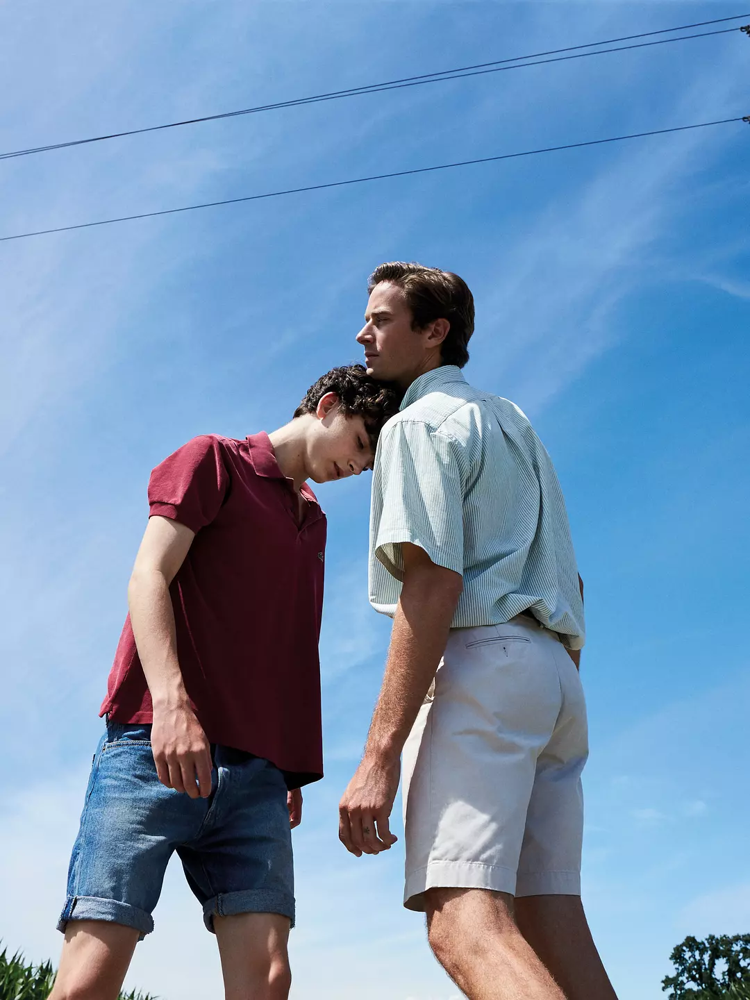
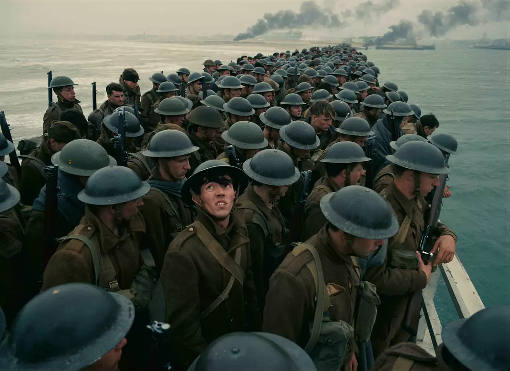
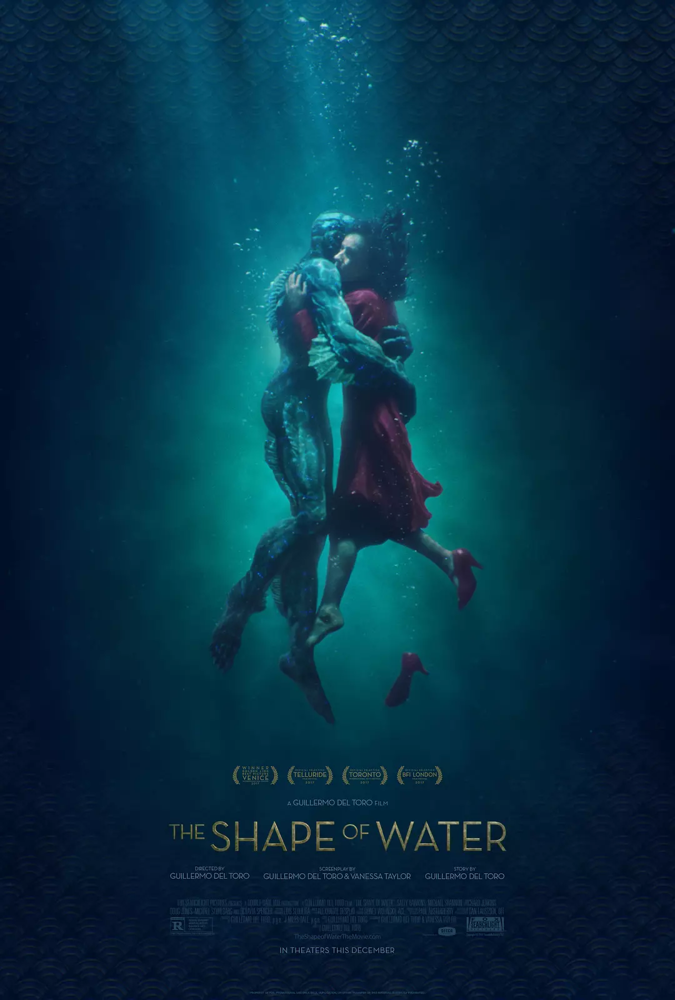

Call Me by Your Name is a 2017 romantic coming-of-age drama film directed by Luca Guadagnino and written by James Ivory, based on the 2007 novel of the same name by André Aciman. It is the third and final installment in Guadagnino's thematic Desire trilogy, following I Am Love (2009) and A Bigger Splash (2015). Set in Northern Italy in 1983, Call Me by Your Name chronicles the romantic relationship between Elio Perlman (Timothée Chalamet), a 17-year-old living in Italy, and his father's American assistant, Oliver (Armie Hammer). The film also stars Michael Stuhlbarg, Amira Casar, Esther Garrel, and Victoire Du Bois.
Call Me by Your Name began development in 2007, when producers Peter Spears and Howard Rosenman optioned the screen rights to Aciman's novel. Ivory had been set to co-direct the film, but ended up writing the script and producing instead. Guadagnino, who came on board as a location consultant, eventually became director and producer. The film was financed by several international companies, and principal photography took place in Crema, Italy in May and June 2016. Cinematographer Sayombhu Mukdeeprom shot the film on 35-mm film.

Darkest Hour is a 2017 British war drama film directed by Joe Wright and written by Anthony McCarten. It stars Gary Oldman as Winston Churchill, and follows his early days as Prime Minister, as Hitler closes in on Britain during World War II. The film also stars Ben Mendelsohn, Kristin Scott Thomas, Lily James, Stephen Dillane, and Ronald Pickup.
The film had its world premiere at the Telluride Film Festival on 1 September 2017,[4] and also screened at the Toronto International Film Festival.[5] It began a limited release in the United States on 22 November 2017, followed by general release on 22 December, and was released on 12 January 2018 in the United Kingdom.[6] The film has grossed $78 million worldwide and was well received by critics.
Gary Oldman's performance was praised, with many critics noting it as one of the best of his career; he was nominated for the Academy Award for Best Actor, and won the Golden Globe Award for Best Actor – Motion Picture Drama and the Screen Actors Guild Award for Outstanding Performance by a Male Actor in a Leading Role for his work.[7] At the 90th Academy Awards, the film earned six nominations, including Best Picture, and at the 71st British Academy Film Awards it received nine nominations, including Best Film as well as Best British Film, Best Actor in a Leading Role for Oldman and Best Actress in a Supporting Role for Scott Thomas
Dunkirk is a 2017 war film written, directed, and produced by Christopher Nolan that depicts the Dunkirk evacuation of World War II. Its ensemble cast includes Fionn Whitehead, Tom Glynn-Carney, Jack Lowden, Harry Styles, Aneurin Barnard, James D'Arcy, Barry Keoghan, Kenneth Branagh, Cillian Murphy, Mark Rylance, and Tom Hardy. The film is a British, American, French, and Dutch co-production, and was distributed by Warner Bros.
Dunkirk portrays the evacuation from three perspectives: land, sea, and air. It has little dialogue, as Nolan sought instead to create suspense from cinematography and music. Filming began in May 2016 in Dunkirk and ended that September in Los Angeles, when post-production began. Cinematographer Hoyte van Hoytema shot the film on IMAX 65 mm and 65 mm large-format film stock. Dunkirk has extensive practical effects, and employed thousands of extras as well as historic boats from the evacuation, and period aeroplanes.
The film premiered on 13 July 2017 at Odeon Leicester Square in London, and was released in the United Kingdom and the United States on 21 July in IMAX, 70 mm, and 35 mm film formats. It is the highest-grossing World War II film of all time, taking $525 million worldwide. Dunkirk received praise for its screenplay, direction, musical score, and cinematography; some critics called it Nolan's best work, and one of the greatest war films. It received the Best Editing award at the 23rd Critics' Choice Awards, eight nominations at the 71st British Academy Film Awards, three at the 75th Golden Globe Awards, and eight at the 90th Academy Awards, including Best Picture and Best Director for Nolan; his first ever Oscar nomination for directing.

The Shape of Water is a 2017 American fantasy drama film[3][4] directed by Guillermo del Toro and written by del Toro and Vanessa Taylor.[3][4] The film stars Sally Hawkins, Michael Shannon, Richard Jenkins, and Octavia Spencer. Set in Baltimore in 1962, the plot follows a mute custodian at a high-security government laboratory who befriends a captured humanoid-amphibian creature. Many critics declared The Shape of Water del Toro's best film since Pan's Labyrinth,[5] praising in particular Hawkins's performance.[6]
The film was screened in the main competition section of the 74th Venice International Film Festival, where it premiered on August 31, 2017,[7] and was awarded the Golden Lion for best film in the competition.[8] It also screened at the 2017 Toronto International Film Festival.[9]
The Shape of Water began a limited release in two theaters in New York City on December 1, 2017, before expanding on December 8, 2017, and has grossed $39 million.[10] A novelized adaptation of the film, written by del Toro and Daniel Kraus, will be released on February 27, 2018.[11]
The American Film Institute selected it as one of the top 10 films of the year.[12] At the 90th Academy Awards, the film received a leading 13 nominations, including Best Picture, Best Director, Best Original Screenplay, Best Actress for Hawkins, Best Supporting Actor for Jenkins and Best Supporting Actress for Spencer. It also won for Best Director and Best Original Score at the 75th Golden Globe Awards, on top of five other nominations.[13] At the 71st British Academy Film Awards, the film received 12 nominations, including Best Film.

The prizes won by The Shape of Water
| Name | Scores |
|---|---|
| The Shape of Water | 7.6 |
| Dunkirk | 8.5 |
| Darkest Time | 8.6 |
| Call Me By Your Name | 8.0 |
| Total | 7.6+8.5+8.6+8.9 |